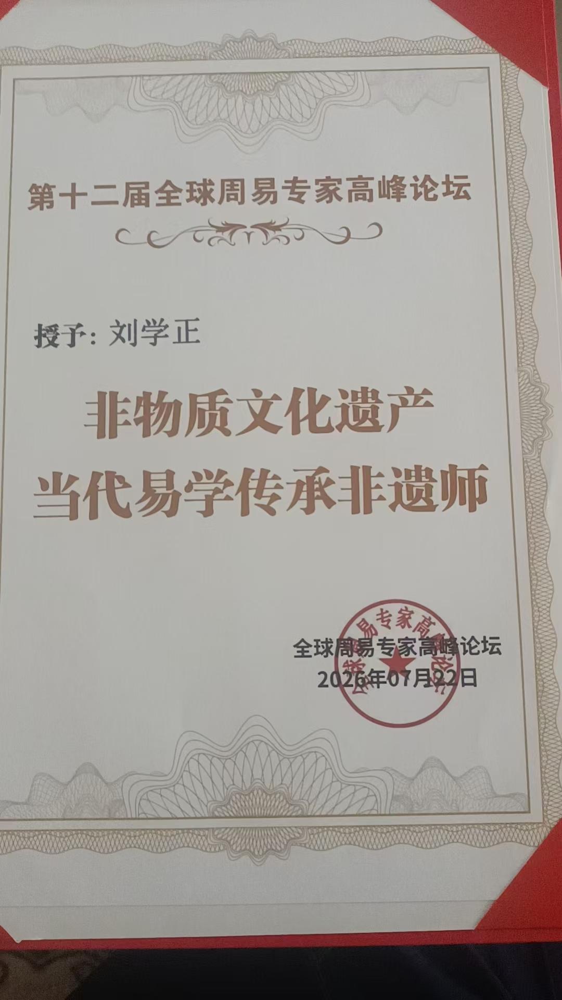
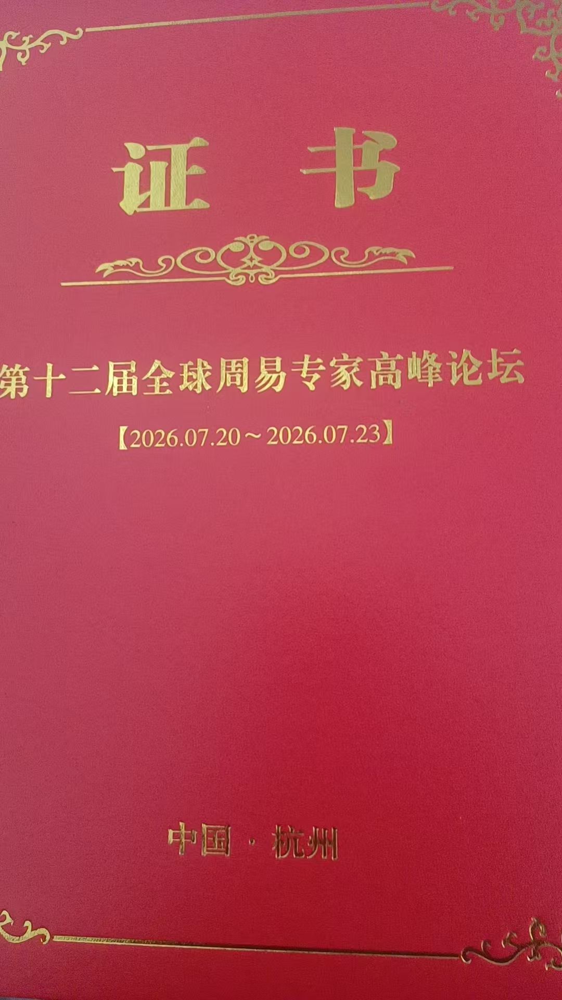
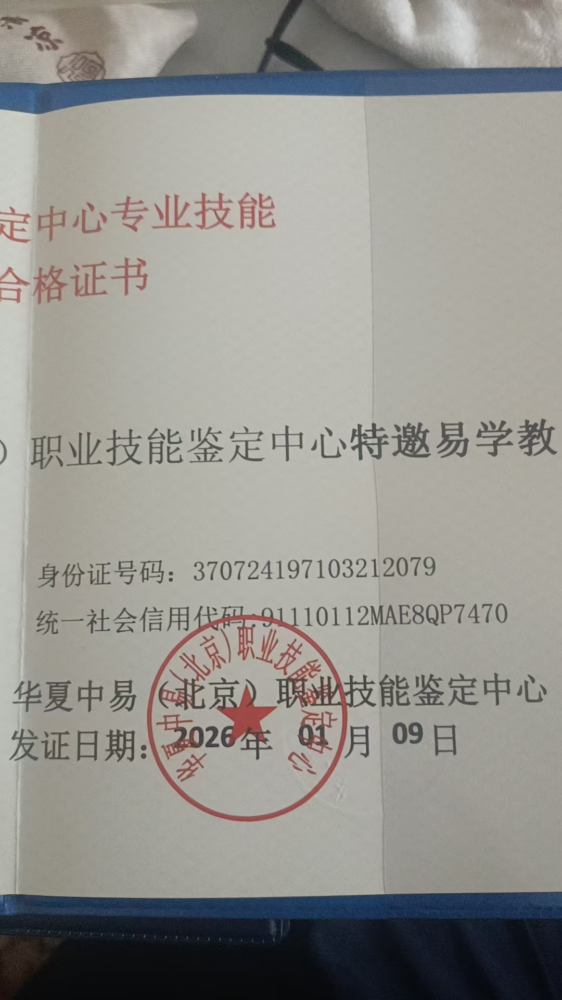
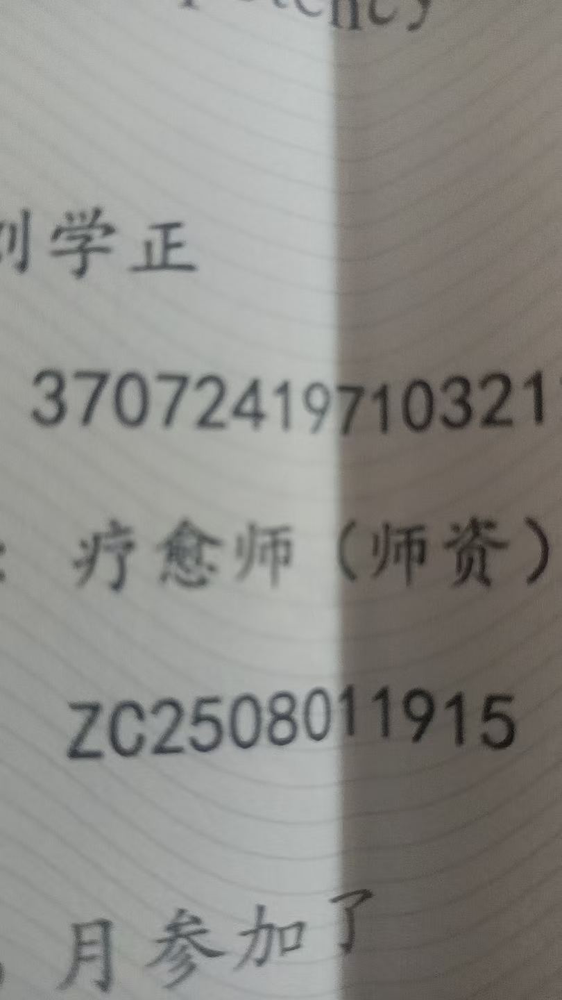
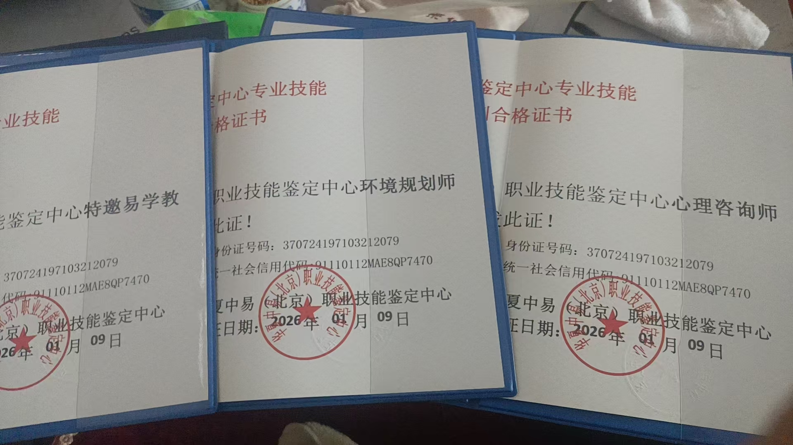

20260725各个协会，互相抢人，内斗
道家 原始对话记录闲聊群，不牵扯政治
这次周易大会，三百人群，第二天就被封号了，说有人举报
去年这个四百多人
不用别人举报
各个协会，互相抢人，内斗
你要开会，对方就举报
这个会一直人多，其他会一直搞不起来
还公开说，他是孙建军的师傅
孙建军又公开自己只有两个师傅
后来会上没见这几个人
那不就是闹翻了
谁闲着举报，都是内部人
2014年，湖北许真观昆仑白鹤道长来参加会议
这老头不错，也算是鹤发童颜
当时称一百二十岁
以前还行，每年都有道家佛家名家过来
今年除了老侯就是紫鸢真人了
2012年那帮八十多的老头，估计都走了
记得是安徽凤阳许真观吧
今年老家伙就去了张志哲教授
钟正教授
侯斌道长
紫鸢真人
[憨笑][憨笑][憨笑]
其余都是新面孔





协会内斗与抢人：行业圈子的生态
一、本页是什么
本页仍是"闲聊群"里的随谈，讲的是术数/修行圈子的业内生态。编者先声明"不牵扯政治"，随后讲了这次周易大会的一个插曲：三百人群第二天就"被封号"，说是有人举报，而去年的会有四百多人。他判断："不用别人举报，各个协会，互相抢人，内斗""谁闲着举报，都是内部人。"
二、抢人与举报：圈子里的"内耗"
本页把"举报"直接归因到同行竞争上：
- "你要开会，对方就举报"；
- "这个会一直人多，其他会一直搞不起来"。
这里没有是非对错的判断，编者只是呈现一种常见现象：市场就那么大，人往哪边走，会就把谁的场子撑起来。于是内耗出现了——比的不再是本事，而是"把对方弄下去"。
三、"谁的师傅"之争
本页举了个具体例子：有人公开说"他是孙建军的师傅"，而孙建军又公开"自己只有两个师傅"，结果"后来会上没见这几个人"——闹翻了。这正对应本集群《庙里的正修师傅，为什么只有一个亲传弟子》里那句：传法的名分极窄，一旦人人自称"亲传"，就必然打架。
四、老前辈与新面孔
本页记得很清楚的一个变化，是人说没就没了：
| 时间 | 本页提到的人物/情况 |
|---|---|
| 2014年 | 湖北许真观昆仑白鹤道长来参会，称"鹤发童颜"、当时一百二十岁 |
| 早些年 | 每年都有道家、佛家名家过来 |
| 今年 | 老家伙只去了几位教授、道长一类，其余多是新面孔 |
| 回忆 | "2012年那帮八十多的老头，估计都走了" |
这一段读来有点苍凉：圈子在换人，气数在更替。
五、常见问题
问：这一页是不是在"爆料"？ 不是。它是随手记的业内观察，本篇也只就"圈子生态"作中性整理。
问：为什么会有这么多内斗？ 本页的看法很实在：同名相忌、好位子有限。人一多，抢字就出来了。
问：老前辈换代说明了什么？ 说明这类圈子靠人维系，人不在了，会就冷清。也提醒后学：多跟还在的人学。
六、提醒
- 本页要点：圈子越小，越容易内耗；
- 涉及人名、年份，均为原记录转述，未作核实；
- 本篇不评断任何团体或个人，仅供了解行业生态。